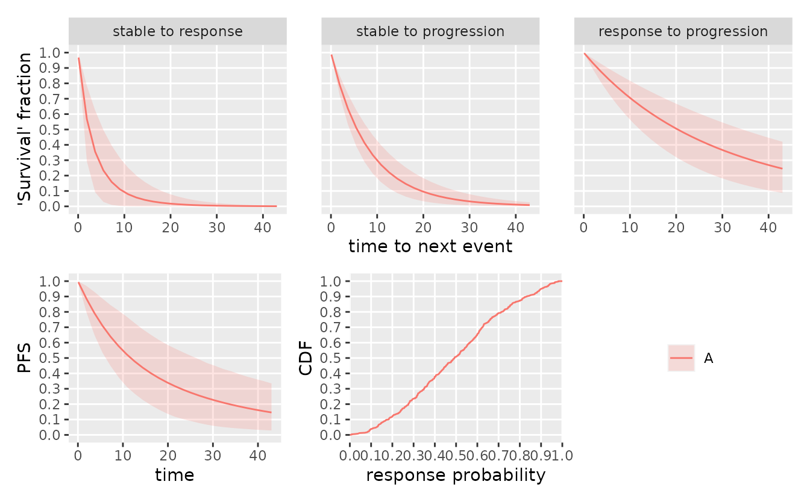
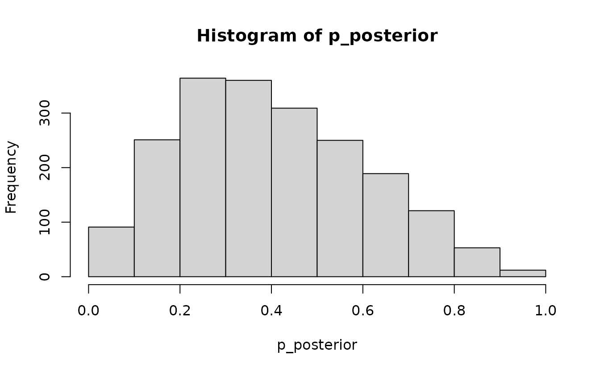

library(dplyr)
#>
#> Attaching package: 'dplyr'
#> The following objects are masked from 'package:stats':
#>
#> filter, lag
#> The following objects are masked from 'package:base':
#>
#> intersect, setdiff, setequal, union
library(tidyr)
library(oncomsm)tl;dr: During interim looks, individuals might still be stable and thus ‘at risk’ of either progression or response. Especially when the respective follow-up times differ, or if there is a difference in median time to response and median time to progression, this might lead to bias in the analysis of the response probability.
mdl <- create_srpmodel(
A = define_srp_prior(
median_t_q05 = c(1, 4, 12), # shorter time to response than progression
median_t_q95 = c(6, 8, 36),
shape_q05 = c(.99, .99, .99), # fixed shape
shape_q95 = c(1, 1, 1),
)
)
plot(mdl, confidence = .9)
tbl_data_interim <- tibble::tribble(
~subject_id, ~t, ~state,
"subj1", 1, "stable",
"subj1", 5, "stable",
"subj2", 1, "stable",
"subj2", 5, "stable",
"subj3", 1, "stable",
"subj3", 5, "stable",
"subj4", 1, "stable",
"subj4", 5, "stable",
"subj5", 0, "stable",
"subj5", 1, "response",
"subj5", 2, "EOF",
"subj6", 0, "stable",
"subj6", 6, "progression"
) %>%
mutate(group_id = "A")
plot_mstate(
visits_to_mstate(tbl_data_interim, mdl),
mdl,
relative_to_sot = FALSE
)A naive estimate of the response rate at month 6 would be \(1/2\). This is implicitly treating the missing response status of the four individuals at risk as missing completely at random (MCAR) in a binomial model. However, given the prior assumption that responses are observed earlier than progressions (also consistent with observed data), it is less likely that the four individuals at risk still become responders - their conditional risk of progression depends on the posterior parameter estimates of the multi-state model and the duration of their ‘stable’ state. Hence, the posterior for the response probability should be concentrated at a value smaller than \(0.5\).
p_posterior <- parameter_sample_to_tibble(
mdl,
sample_posterior(mdl, tbl_data_interim)
) %>%
filter(parameter == "p") %>%
pull(value)
hist(p_posterior)
summary(p_posterior)
#> Min. 1st Qu. Median Mean 3rd Qu. Max.
#> 0.01198 0.25004 0.38693 0.40495 0.54666 0.97040Indeed this is the case. The multi-state model can thus support a more principled approach to estimating key quantities like response probability or duration of response during interim analyses.